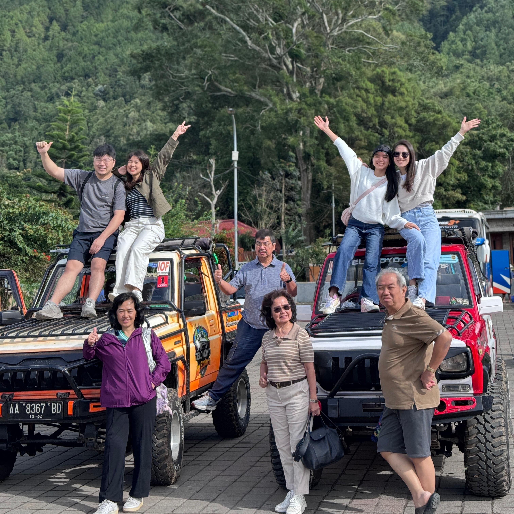
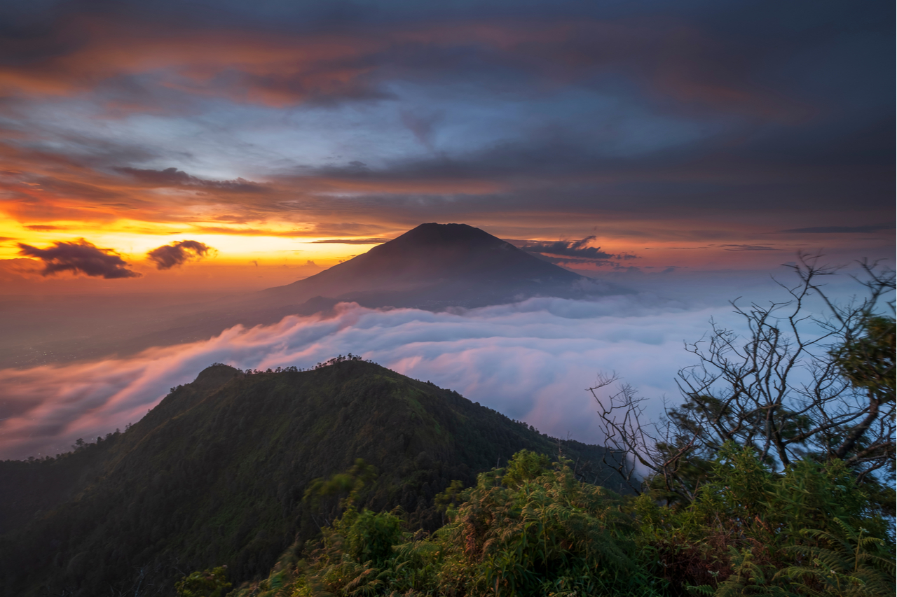
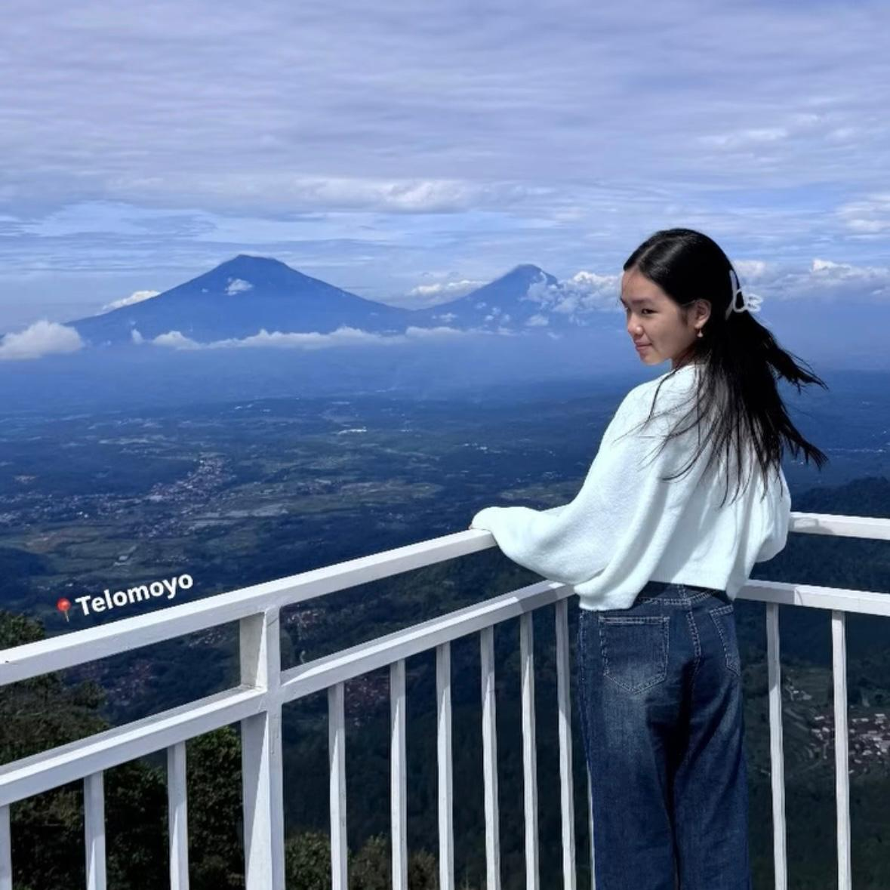
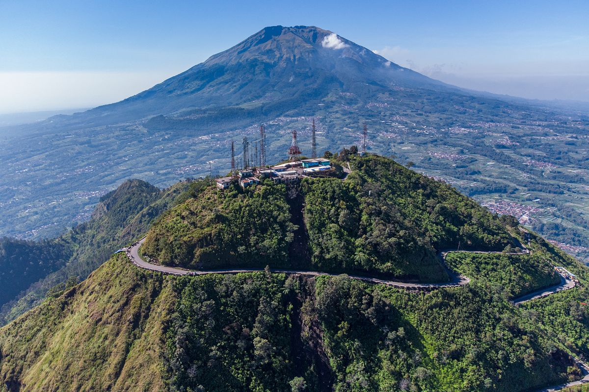
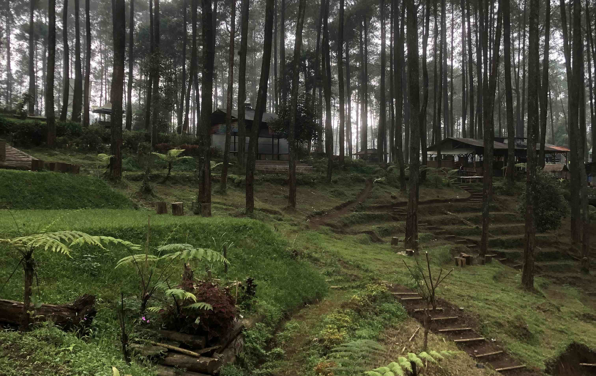
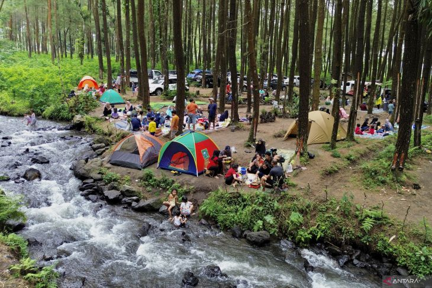
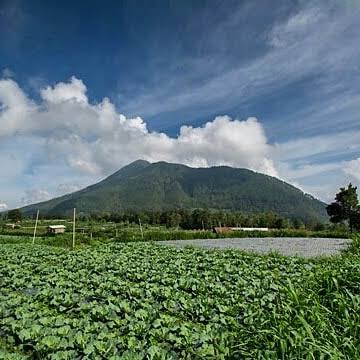
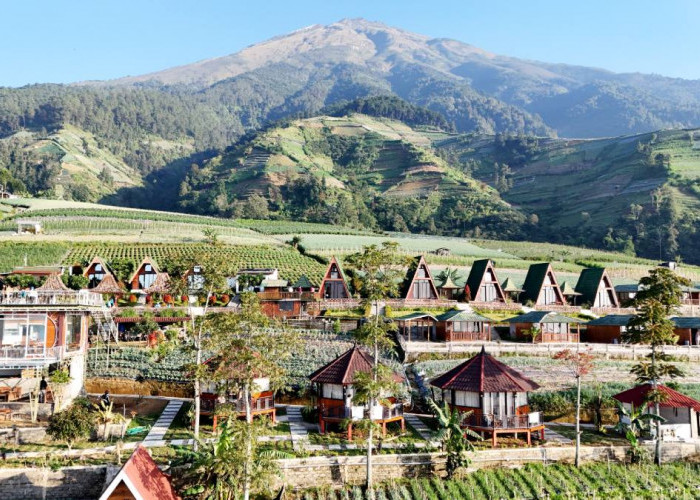
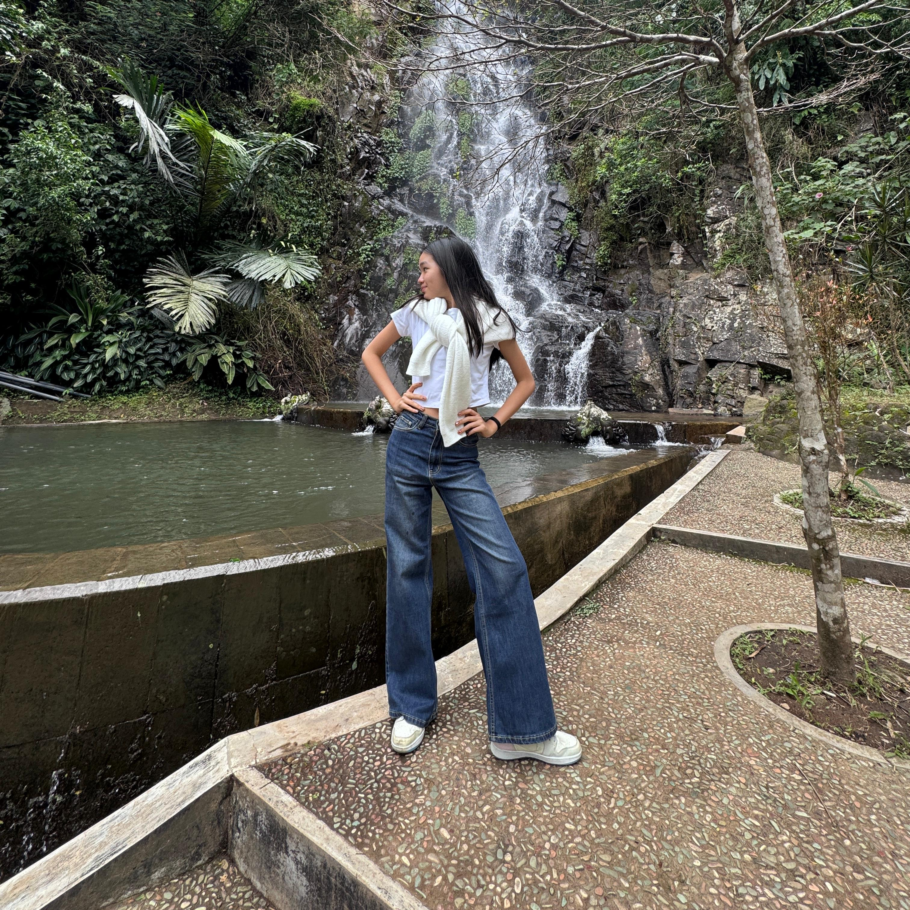
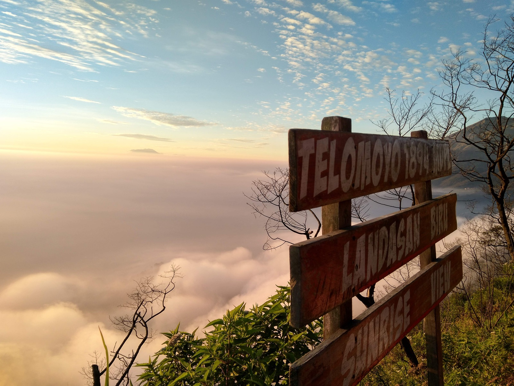

Gunung Telomoyo adalah salah satu destinasi wisata alam di Jawa Tengah yang menawarkan keindahan luar biasa. Gunung ini terletak di perbatasan Kabupaten Semarang dan Kabupaten Magelang, menjadikannya mudah diakses dari berbagai arah. Telomoyo dikenal dengan udara yang sejuk, langit cerah, serta panorama alam yang terbentang luas, sehingga cocok dijadikan pilihan wisata untuk melepas penat dari rutinitas sehari-hari.


Daya tarik utama Telomoyo terletak pada puncaknya. Dari atas, pengunjung dapat menikmati pemandangan hijau pegunungan, deretan gunung lain di kejauhan, serta hamparan langit biru yang bersih. Udara segar dan suasana tenang membuat siapa pun betah berlama-lama. Tidak hanya itu, puncak Telomoyo juga menyajikan banyak spot foto menarik yang sangat instagramable, sehingga sering menjadi tujuan favorit para pecinta fotografi maupun wisatawan yang ingin mengabadikan momen liburan.


Selain puncak yang menawan, Telomoyo juga memiliki hutan pinus yang menawarkan nuansa berbeda. Pohon-pohon pinus menjulang tinggi dengan batang lurus memberikan kesan alami sekaligus artistik. Cahaya matahari yang menembus di antara pepohonan menambah keindahan suasana. Hutan pinus ini sangat cocok untuk bersantai, piknik kecil, maupun berfoto dengan latar alam yang tenang dan menyejukkan.


Tidak jauh dari kawasan gunung, terdapat Desa Seloprojo yang berada di lereng Telomoyo. Desa ini menawarkan pengalaman wisata yang unik dengan suasana pedesaan yang asri dan masyarakat yang ramah. Pemandangan alam sekitar desa menambah kesan alami dan damai, sehingga pengunjung dapat merasakan langsung kehidupan khas pedesaan Jawa yang sederhana namun hangat.


Dengan kombinasi panorama pegunungan yang indah, hutan pinus yang menenangkan, dan desa wisata yang ramah, Gunung Telomoyo menjadi destinasi yang sayang untuk dilewatkan. Tempat ini cocok untuk wisata keluarga, pecinta alam, hingga pemburu foto estetik. Jadi, jika sedang mencari tempat wisata yang sejuk, indah, dan penuh pengalaman berkesan, ayo datang dan nikmati pesona Telomoyo! 🌿✨